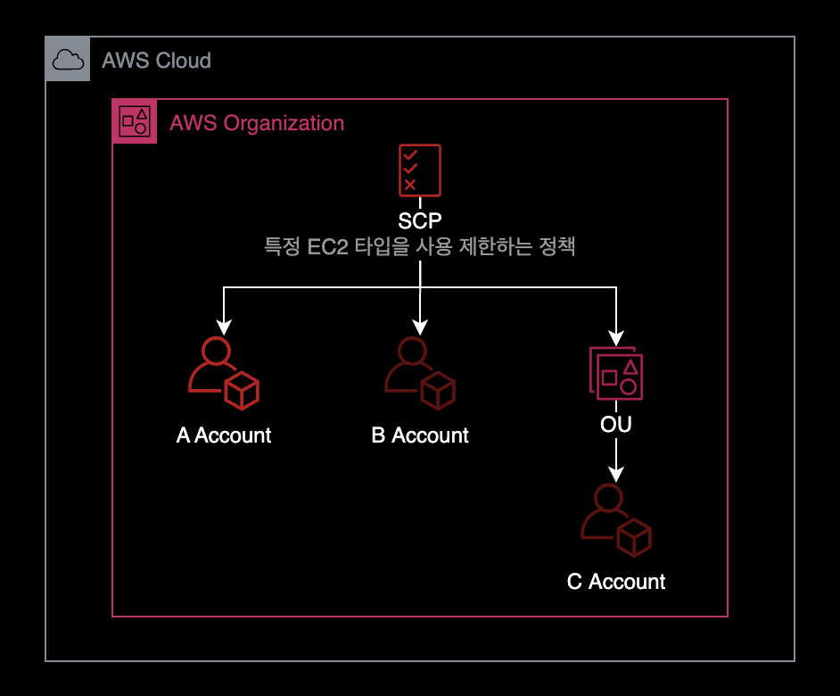
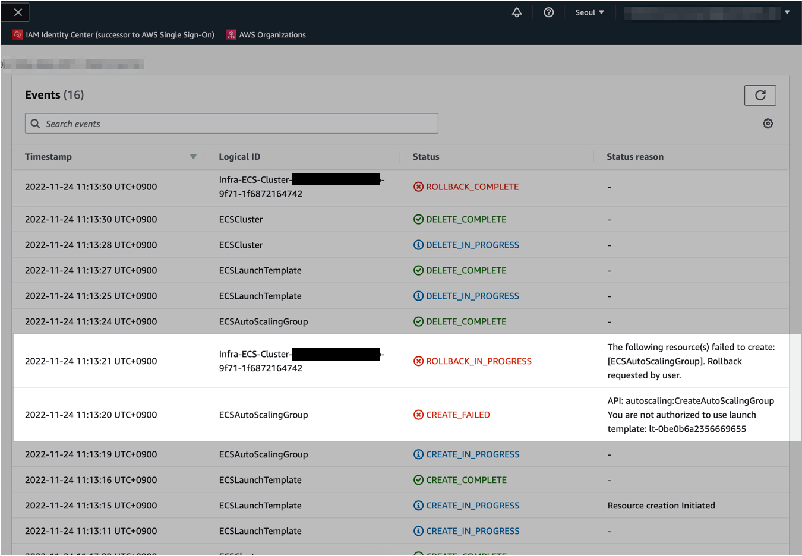

특정 EC2 인스턴스 타입 사용금지 설정
개요
AWS Organization의 서비스 제어 정책SCP 기능을 사용해서 구세대 EC2 인스턴스 타입과 구세대 EBS 인스턴스 타입을 강제로 제한하는 방법을 소개합니다.
준비사항

- 서비스 제어 정책SCP은 AWS Organization의 기능 중 일부이기 때문에, AWS Organization이 미리 구성된 상태여야 합니다.
- AWS Organization의 Management Account에서만 서비스 제어 정책SCP을 설정할 수 있습니다.
설정방법
특정 EBS와 EC2 타입을 거부
AWS Organizations 환경인 경우, 서비스 제어 정책SCP을 아래와 같이 작성합니다.
이 정책을 통해 구세대 EC2 인스턴스 타입과 구세대 EBS 볼륨 사용을 제한할 수 있습니다.
아래는 서비스 제어 정책의 내용입니다.
{
"Statement": [
{
"Action": "ec2:*",
"Condition": {
"ForAnyValue:StringEquals": {
"ec2:VolumeType": [
"gp2",
"io1"
]
}
},
"Effect": "Deny",
"Resource": "*",
"Sid": "RestrictLegacyEBSVolumeType"
},
{
"Action": "ec2:*",
"Condition": {
"ForAnyValue:StringLike": {
"ec2:InstanceType": [
"t2.*"
]
}
},
"Effect": "Deny",
"Resource": "*",
"Sid": "RestrictLegacyInstanceType"
}
],
"Version": "2012-10-17"
}
- EBS의
gp2,io1타입 사용을 제한합니다. - EC2의
t2.*패밀리 전체 사용을 제한합니다.
특정 EC2 인스턴스 타입만 허용
t3.* 패밀리 외에 다른 EC2 인스턴스 타입은 모두 거부합니다.
아래는 서비스 제어 정책의 내용입니다.
{
"Statement": [
{
"Sid": "RequireT3FamilyInstanceType",
"Effect": "Deny",
"Action": "ec2:RunInstances",
"Resource": [
"arn:aws:ec2:*:*:instance/*"
],
"Condition": {
"ForAnyValue:StringNotLike": {
"ec2:InstanceType": [
"t3.*"
]
}
}
}
],
"Version": "2012-10-17"
}
SCP 설정 시 사이드 이펙트
ECS Cluster 생성 시 영향
최신 버전의 AWS 콘솔에서 ECS Cluster를 생성하게 될 경우, 기본적으로 gp2 타입의 볼륨을 사용하도록 생성합니다.
AWS Organizations의 서비스 제어 정책SCP를 통해 gp2 볼륨 사용을 금지한 상태인 경우, Auto Scaling Group을 새로 생성하는 과정에서 에러가 발생할 수 있습니다.

아래는 CloudFormation에서 Auto Scaling Group을 생성하는 과정에서 발생하는 에러 메세지입니다.
There was an error creating cluster dev-apne2-pri-burgerpay-frontend-cluster.
API: autoscaling:CreateAutoScalingGroup You are not authorized to use launch template: lt-0xx0x9x1234567890
이 문제를 해결하기 위해서는 SCP를 수정해서 다시 gp2 볼륨 제한을 예외적으로 허용해주어야 합니다.
참고자료
AWS - Amazon Elastic Compute Cloud(Amazon EC2)에 대한 SCP 예제
Stack Overflow - AWS SCP for EC2 type